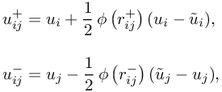
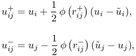
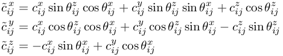
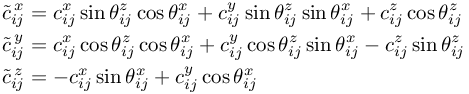

Simulate with complex geometries and complex physics
pure_TRANSPORT
(experimental) choice of spatial discretization scheme for transport terms in EULERIMPL and EULEREXPL setting
pure_TRANSPORT = 2
Default: pure_TRANSPORT = 1
There are two different methods for discretizing transport terms within the EULERIMPL and EULEREXPL setting:
- Cutting method for efficient solving of transport terms . Designed for incompressible solver LIQUID .
- Rotational method for approximating flux functions in hyperbolic equations . Designed for compressible solver.
- pure_TRANSPORT = 1 -> transport terms are discretized by cutting method:
For the transport equation the discretization scheme for an interior point is
![\frac{d u_i}{d t} &= -2 \! \! \! \sum \limits_{\scriptstyle j \in S(i) \atop \scriptstyle j\neq i} \! \! \! c_{ij}^{\mathbf{v} \cdot \nabla} \big( u_{ij} - u_i \big), \\[10pt]
u_{ij} &= \frac{1}{2}\Bigl[ \big(1 + \mathrm{sign}( (\mathbf{x}_{j}-\mathbf{x}_{i}) \cdot \mathbf{v}_{i} ) \big) \, u_{ij}^{+} + \big(1 - \mathrm{sign}( (\mathbf{x}_{j}-\mathbf{x}_{i}) \cdot \mathbf{v}_{i} ) \big) \, u_{ij}^{-} \Bigr], \\[10pt]
c_{ij}^{\mathbf{v} \cdot \nabla} &= \mathbf{c}_{ij} \cdot \mathbf{v}_i = c_{ij}^x \, v_i^x + c_{ij}^y \, v_i^y + c_{ij}^z \, v_i^z.](a80a1ba1c88412b8774178bbf2787ca8.png)
 : FPM stencils for approximating x,y,z-derivative
0 \end{cases} " class="latex" border="0">The MUSCL reconstructions arewhereby
: FPM stencils for approximating x,y,z-derivative
0 \end{cases} " class="latex" border="0">The MUSCL reconstructions arewhereby is the slope LIMITER and
The unknown function values
is the slope LIMITER and
The unknown function values  are approximated by Taylor expansions (see additionalPoint_approximation).
are approximated by Taylor expansions (see additionalPoint_approximation).
- pure_TRANSPORT = 2 -> transport terms are discretized by rotational method. Only for experimental purposes!
- pure_TRANSPORT = 3 -> flux function is approximated by cutting method. This works only for scalar hyperbolic equations! Only for experimental purposes!
- pure_TRANSPORT = 4 -> flux function is approximated by rotational method. This method is only implemented for scalar hyperbolic equations in the EULEREXPL setting so far. But it is also being implemented for hyperbolic systems like shallow water or gas dynamic equations.
For the scalar equation the discretization scheme for an interior point is
![\frac{d u_i}{d t} = -2 & \! \! \! \sum \limits_{\scriptstyle j \in S(i) \atop \scriptstyle j\neq i} \! \! \! \tilde{c}_{ij}^{\, x} \, \big( F(u_{ij}^{+}, u_{ij}^{-}, \mathbf{\hat{n}}_{ij}) - \mathbf{Q}(u_i) \! \cdot \mathbf{\hat{n}}_{ij} \big) + \tilde{c}_{ij}^{\, y} \, \big( G(u_{ij}^{+}, u_{ij}^{-}, \mathbf{\hat{s}}_{ij}) - \mathbf{Q}(u_i) \! \cdot \mathbf{\hat{s}}_{ij} \big)
+ \tilde{c}_{ij}^{\, z} \, \big( H(u_{ij}^{+}, u_{ij}^{-}, \mathbf{\hat{t}}_{ij}) - \mathbf{Q}(u_i) \! \cdot \mathbf{\hat{t}}_{ij} \big),](7e03a85bd340918e3347227b3ef1a1af.png) whereby
whereby![F(u_{ij}^{+}, u_{ij}^{-}, \mathbf{\hat{n}}_{ij}) &= \frac{1}{2} \big( \mathbf{Q}(u_{ij}^{+}) + \mathbf{Q}(u_{ij}^{-}) \big) \cdot \mathbf{\hat{n}}_{ij} - \frac{1}{2} \big| \mathbf{\tilde{a}}_{ij} \cdot \mathbf{\hat{n}}_{ij} \big| \big(u_{ij}^{-} - u_{ij}^{+}\big), \\[15pt]
G(u_{ij}^{+}, u_{ij}^{-}, \mathbf{\hat{s}}_{ij}) &= \frac{1}{2} \big( \mathbf{Q}(u_{ij}^{+}) + \mathbf{Q}(u_{ij}^{-}) \big) \cdot \mathbf{\hat{s}}_{ij}, \\[15pt]
H(u_{ij}^{+}, u_{ij}^{-}, \mathbf{\hat{t}}_{ij}) &= \frac{1}{2} \big( \mathbf{Q}(u_{ij}^{+}) + \mathbf{Q}(u_{ij}^{-}) \big) \cdot \mathbf{\hat{t}}_{ij}](7046036e52285b292bf1c631e3f10632.png) are the stencils in the rotated coordinate systemis the angle between z-axis and vector is the angle between x-axis and vector
are the stencils in the rotated coordinate systemis the angle between z-axis and vector is the angle between x-axis and vector![\mathbf{\hat{n}}_{ij} &= \left(\begin{array}{*{1}{c}}
\sin \theta_{ij}^{z} \cos \theta_{ij}^{x} \\
\sin \theta_{ij}^{z} \sin \theta_{ij}^{x} \\
\cos \theta_{ij}^{z}
\end{array}\right), \qquad \mathbf{\hat{s}}_{ij} = \left(\begin{array}{*{1}{c}}
\cos \theta_{ij}^{z} \cos \theta_{ij}^{x} \\
\cos \theta_{ij}^{z} \sin \theta_{ij}^{x} \\
-\sin \theta_{ij}^{z}
\end{array}\right), \qquad \mathbf{\hat{t}}_{ij} = \left(\begin{array}{*{1}{c}}
-\sin \theta_{ij}^{x} \\
\cos \theta_{ij}^{x} \\
0
\end{array}\right).](0dd4277b9f8f8727c9999d0d0ba16b81.png)
| This item is referenced in: | |
|---|---|
| additionalPoint_approximation | (experimental) in EULERIMPL and EULEREXPL setting |
| pure_TRANSPORT | (experimental) choice of spatial discretization scheme for transport terms in EULERIMPL and EULEREXPL setting |
| EULERIMPL | Higher order implicit Eulerian or ALE motion (recommended among the Euler implementations) |
| EULEREXPL | (experimental) Semi-explicit Eulerian or ALE motion |